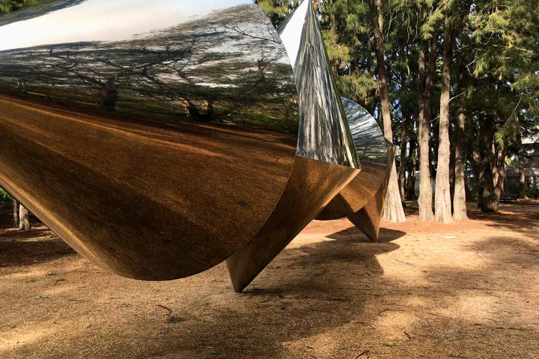

Erscott’s Hole

Underwater view of the coral reef
Home to 500 fish species and 90 species of coral, Lord Howe’s snorkelling is second to none.
A luxuriant garden of Staghorn coral dominates the iconic snorkelling destination that is Erscott’s Hole, a natural wonder within a protected intertidal groyne.
Admiralty Islands

View of Islands seen from the beach
Just 15 minutes by boat from Lord Howe rests an intriguing group of volcanic formations, dubbed the Admiralty Islands. Large pinnacles, coral reefs, larger schools of fish and diving depths of 15-40 metres characterise the islands.Eager divers flock to this area, and for good reason.
Blinky’s Beach
View of Blinkey's Beach
Keen surfers and body boarders head to Blinky Beach to experience what the locals have dubbed ‘Champagne Surf’.Located on the island’s east side, the beach is the most popular place to catch a ride on some of Australia’s least crowded waves.